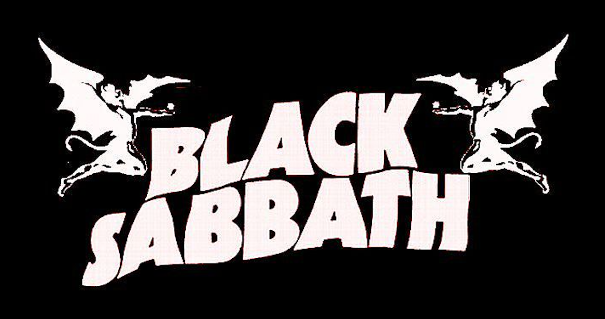

Paranoid álbum

| # | Canción | Duración |
|---|---|---|
| 1 | War Pigs | 7:56 |
| 2 | Paranoid | 2:47 |
| 3 | Planet Caravan | 4:27 |
| 4 | Iron Man | 5:55 |
| 5 | Electric Funeral | 4:50 |
| 6 | Hand Of Doom | 7:08 |
| 7 | Rat Salad | 2:30 |
| 8 | Fairies Wear Boots | 6:14 |
Paranoid es el segundo álbum de estudio de la banda inglesa de rock Black Sabbath, publicado el 18 de septiembre de 1970 en el Reino Unido y el 7 de enero de 1971 en Estados Unidos. Fue el único LP de la banda en encabezar la lista de álbumes del Reino Unido hasta el lanzamiento de 13 en 2013. Paranoid contiene varias de las canciones emblemáticas de la banda, incluyendo "Iron Man", "War Pigs" y la canción que da título al álbum, que fue el único éxito de la banda en el Top 20, alcanzando el número 4 en las listas del Reino Unido. A menudo se considera uno de los álbumes más influyentes de la historia del heavy metal, junto con su álbum homónimo y Master of Reality.
Es una banda británica de heavy metal y doom metal formada en 1968 en Birmingham porTony Iommi (guitarra), Ozzy Osbourne (voz), Geezer Butler (bajo) y Bill Ward (batería). Desde entonces, la banda ha sufrido multitud de cambios de formación, con más de veinticinco antiguos miembros.Formados originalmente como una banda de blues rock llamada en un principio Polka Tulk y posteriormente, la agrupación incorporó letras sobre ocultismo y terror con guitarras afinadas de modo más grave, cambiando su nombre por Black Sabbath y consiguiendo varios discos de oro y platino en la década de 1970.

Es una canción que nos hace reflexionar sobre las consecuencias de nuestras decisiones. La canción desarrolla la historia de un hombre misterioso que realiza justicia propia una vez que descubre lo que le depara a la humanidad en el futuro.
Black Sabbath nos cuenta que existe un hombre que viajó al futuro y descubrió que habrá un apocalipsis. Cuando regresa, su cuerpo se transforma en metal y pierde la voz. Así que, antes de esperar por los terribles acontecimientos que vió, prefiere acabar con la sociedad con su propia mano.
Además, la narrativa de la canción puede interpretarse como una metáfora de la alienación y las consecuencias de la indiferencia social. Musicalmente, Iron Man refleja el estilo característico de Black Sabbath, con riffs de guitarra pesados y una atmósfera sombría que complementa la narrativa.